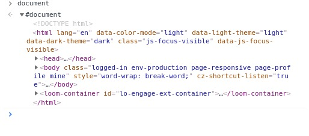
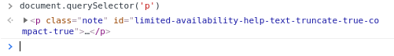
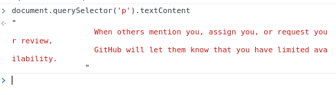
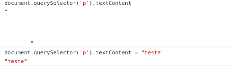

DOM = Objeto
Em seu console do browser, escreva "document"
Para selecionar algum componente da arvore do dom, é necesssário a utilização do método querySelector.
Suponhámos que você gostaria de acessar a tag p de sua árvore, basta escrever o seguinte comando eu seu console document.querySelector('p'). Você também pode acessar o coponente utilizando seu ID e classe.
Para selecionar o conteúdo de um componente especifico é necessário utilizar o método querySelector + textContent
document.querySelector('p').textContent
Para mudar o conteúdo de um componente é necessário utilizar o seguinte comando document.querySelector('p').textContent = 'exemplo'
